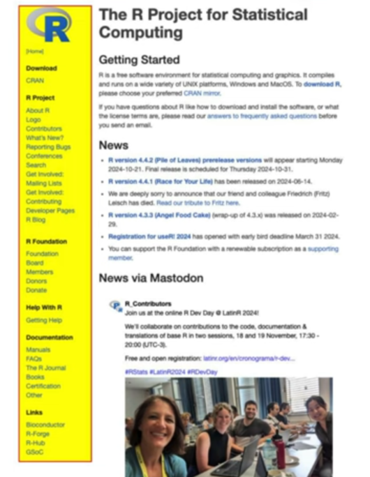
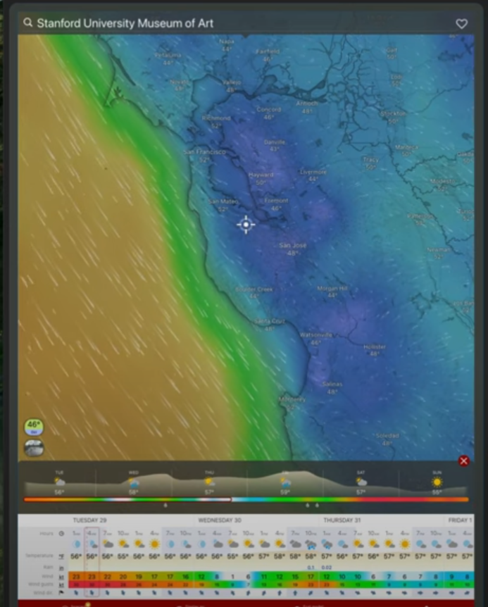
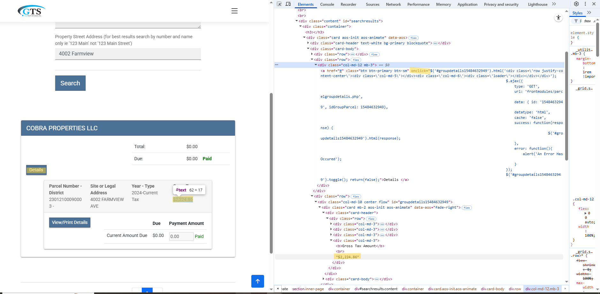
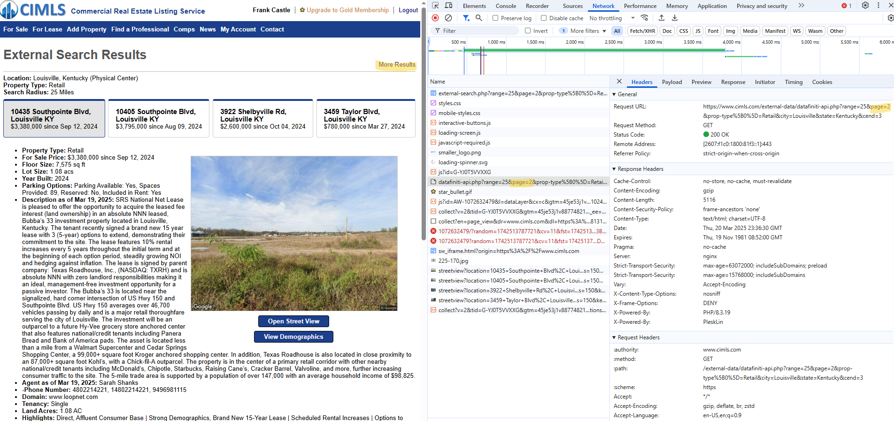

Scraping
Misc
- {chromote} - Headless Chrome Web Browser Interface
- {polite} (article) - Uses three principles of polite webscraping: seeking permission, taking slowly and never asking twice.
Specifically, it manages the http session, declares the user agent string and checks the site policies, and uses rate-limiting and response caching to minimize the impact on the webserver.
Creates a session with
bow, requests a page withnod, and pulls the contents of the page withscrape.Example
Code
library(polite) library(rvest) session <- bow("https://www.cheese.com/by_type", force = TRUE) result <- scrape(session, query=list(t = "semi-soft", per_page = 100)) |> html_node("#main-body") |> html_nodes("h3") |> html_text() head(result) #> [1] "3-Cheese Italian Blend" "Abbaye de Citeaux" #> [3] "Abbaye du Mont des Cats" "Adelost" #> [5] "ADL Brick Cheese" "Ailsa Craig"
- {Rcrawler} - Sort of an automated {rvest} (not maintained any longer)
- e.g. Collect all published posts on a blog, or extract all products data on a shopping website, or gathering all websites comments or reviews for your opinion mining studies.
- Builds a network representation of a website internal and external hyperlinks (nodes & edges).
- {rJavaEnv} - Quickly install Java Development Kit (JDK) without administrative privileges and set environment variables in current R session or project to solve common issues with ‘Java’ environment management in ‘R’.
- {robotstxt} - Provides functions to download and parse ‘robots.txt’ files.
Unofficial Guidelines
- Finding no robots.txt file at the server (e.g. HTTP status code 404) implies that everything is allowed
- Subdomains should have there own robots.txt file if not it is assumed that everything is allowed
- Redirects involving protocol changes - e.g. upgrading from http to https - are followed and considered no domain or subdomain change - so whatever is found at the end of the redirect is considered to be the robots.txt file for the original domain
- Redirects from subdomain www to the domain is considered no domain change - so whatever is found at the end of the redirect is considered to be the robots.txt file for the subdomain originally requested
Example
Code
robotstxt::get_robotstxt("https://www.cimls.com") #> [robots.txt] #> -------------------------------------- #> #> Sitemap: https://www.cimls.com/sitemaps/sitemap-index.xml #> #> User-agent: * #> Disallow: /view-map.php #> Disallow: /data_provider/broker_website.php #> Disallow: /admin/* #> Disallow: /login/* #> Allow: / robotstxt::paths_allowed( paths = "external-data/datafiniti-api.php", domain = "www.cimls.com", bot = "*" ) #> www.cimls.com #> #> [1] TRUE- The robots.txt does seems to be okay with my calling its api
- TRUE means bots have permission to access the page
- {rselenium}
- {rvest}
- {selenider} - Wrapper functions around {chromote} and {selenium} functions that utilize lazy element finding and automatic waiting to make scraping code more reliable
- {selenium}
- {shadowr} - For shadow DOMs
- Resources
- Waiting for stuff to load
{selenider} fixes this problem
In loops, use
Sys.sleep(probably) after EVERY selenium function. Sys.sleep(1) might be all that’s required.- See Projects > foe > gb-level-1_9-thread > scrape-gb-levels.R
- Might not always be needed, but absolutely need if you’re filling out a form and submitting it.
- Might even need one at the top of the loop
- If a Selenium function stops working, adding Sys.sleeps are worth a try.
Using a while-loop in order to account for uncertain loading times
Example: (source)
for (page_index in 1:2348) { # Try to find the buttons "Ver Mais" all_buttons_loaded <- FALSE iterations <- 0 while(!all_buttons_loaded & iterations < 20) { tryCatch( { test <- remote_driver$ findElements(using = 'id', value = "link_ver_detalhe") if (inherits(test, "list") && length(test) > 0) { all_buttons_loaded <<- TRUE } }, error = function(e) { iterations <<- iterations + 1 Sys.sleep(0.5) } ) } if (!all_buttons_loaded & iterations == 20) { next } # ... more stuff }
- Keeping track of progress can help to find where the error occurred (source)
Areas that indicate stages within a scraping script
- Show which page is being scraped;
- Show which modal of this page is being scraped;
- Show the status of this scraping (success/failure).
Example:
# save calls to message() in an external file log_appender(appender_file("data/modals/00_logfile")) log_messages() for (page_index in 1:2348) { message(paste("Start scraping of page", page_index)) for (modal_index in buttons) { # open modal # get HTML and save it in an external file # leave modal message(paste(" Scraped modal", modal_index)) } # Once all modals of a page have been scraped, go to the next page (except # if we're on the last page) message(paste("Finished scraping of page", page_index)) }
- Best practice to scrape the html page and clean it in separate scripts
Keeping the raw html files helps with reproducibility
Example:
buttons[[modal_index]]$clickElement() Sys.sleep(1.5) # Get the HTML and save it tmp <- remote_driver$getPageSource()[[1]] write(tmp, file = paste0("data/modals/page-", page_index, "-modal-", modal_index, ".html")) # Leave the modal body <- remote_driver$findElement(using = "xpath", value = "/html/body") body$sendKeysToElement(list(key = "escape"))
- Sometimes
clickElement( )stops working for no apparent reason. When this happens usedsendKeysToElement(list("laptops",key="enter")) - In batch scripts (.bat), sometimes after a major windows update, the Java that selenium uses will trigger Windows Defender (WD) and cause the scraping script to fail (if you have it scheduled). If you run the .bat script manually and then when the WD box rears its ugly head, just click ignore. WD should remember after that and not to mess with it.
- RSelenium
findElement(using = "")options “class name†: Returns an element whose class name contains the search value; compound class names are not permitted.- “css selector†: Returns an element matching a CSS selector.
- “id†: Returns an element whose ID attribute matches the search value.
- “name†: Returns an element whose NAME attribute matches the search value.
- “link text†: Returns an anchor element whose visible text matches the search value.
- “partial link text†: Returns an anchor element whose visible text partially matches the search value.
- “tag name†: Returns an element whose tag name matches the search value.
- “xpath†: Returns an element matching an XPath expression.
Terms
- Event Bubbling - When an event happens on a DOM element (like a click on a button), that event “bubbles up†from the target element to its ancestors in the DOM tree — all the way up to the
<html>element.- It allows for event delegation (e.g., you attach one listener to a parent element and handle clicks from all child elements).
- e.g. if there’s an event listener attached to a parent element that’s listening for a “click,†then once the button is clicked. that click signal travels to the parent
<div>element where the event listener receives it and activates whatever (e.g. logging user clicks on a webpage)
- Headless Browser - Without a visual interface
- Static Web Page: A web page (HTML page) that contains the same information for all users. Although it may be periodically updated, it does not change with each user retrieval.
- Dynamic Web Page: A web page that provides custom content for the user based on the results of a search or some other request. Also known as “dynamic HTML†or “dynamic content”, the “dynamic†term is used when referring to interactive Web pages created for each user.
rvest
Misc
- Notes from: Pluralsight.Advanced.Web.Scraping.Tactics.R.Playbook
Uses css selectors or xpath to find html nodes
library(rvest) page <- read_html("<url>") node <- html_element(page, xpath = "<xpath>"- Find css selectors
- selector gadget
- click selector gadget app icon in Chrome in upper right assuming you’ve installed it already
- click item on webpage you want to scrape
- it will highlight other items as well
- click each item you DON’T want to deselect it
- copy the selector name in box at the bottom of webpage
- Use html_text to pull text or html_attr to pull a link or something
- inspect
- right-click item on webpage
- click inspect
- html element should be highlighted in elements tab of right side pan
- right-click element –> copy –> copy selector or copy xpath
- selector gadget
- Find css selectors
Example: Access data that needs authentication (also see RSelenium version)
navigate to login page
session <- session("<login page url>")Find “forms†for username and password
form <- html_form(session)[[1]] form- Evidently there are multiple forms on a webpage. He didn’t give a good explanation for why he chose the first one
- “session_key†and “session_password†are the ones needed
Fill out the necessary parts of the form and send it
filled_form <- html_form_set(form, session_key = "<username>", session_password = "<password>") filled_form # shows values that inputed next the form sections log_in <- session_submit(session, filled_form)Confirm that your logged in
log_in # prints url status = 200, type = text/html, size = 757813 (number of lines of html on page?) browseURL(log_in$url) # think this maybe opens browser
Example: Filter a football stats table by selecting values from a dropdown menu on a webpage (also see RSelenium version)
After set-up and navigating to url, get the forms from the webpage
forms <- html_form(session) forms # prints all the forms- The fourth has all the filtering menu categories (team, week, position, year), so that one is chosen
Fill out the form to enter the values you want to use to filter the table and submit that form to filter the table
filled_form <- html_form_set(forms[[4]], "team" = "DAL", "week" = "all", "position" = "QB", "year" = "2017") submitted_session <- session_submit(session = session, form = filled_form)Look for the newly filtered table
tables <- html_elements(submitted_session, "table") tables- Using inspect, you can see the 2nd one has <table class = “sortable stats-table…etc
Select the second table and convert it to a dataframe
football_df <- html_table(tables[[2]], header = TRUE)
Example: Retrieve Sidebar Content (source)
chrome_session <- ChromoteSession$new() # Retrieve the sidebar content node <- chrome_session$DOM$querySelector( nodeId = chrome_session$DOM$getDocument()$root$nodeId, selector = ".sidebar" ) # Get the outerHTML of the node html_content <- chrome_session$DOM$getOuterHTML( nodeId = node$nodeId ) ## Parse the sidebar content with `rvest` ---- # Pull the node's HTML response html_content$outerHTML |> # Extract the HTML content rvest::minimal_html() |> # Convert to XML document rvest::html_elements("a") |> # Obtain all anchor (i.e. links) tags rvest::html_text() # Extract the text from the anchor tagsEvery element in the sidebar pretty much has a link, so the text can extracted from them.
The CSS selector was much longer but he shortened it to “.sidebar”
Example: Scrape links and download pdfs (source)
pacman::p_load( dplyr, purrr, rvest ) # Define the target URL url <- "https://www.uhcprovider.com/en/policies-protocols/clinical-guidelines.html" page <- read_html(url) # Use html_node() to select the first matching element with the provided XPath node <- html_node(page, xpath = "/html/body/div[1]/div/div/div[4]/div/div[4]/div/div[2]/div/div") link_tbl <- node |> html_elements("h3") |> html_elements("a") |> html_attr("href") |> as_tibble() |> rename(link = value) |> mutate( base_url = "https://www.uhcprovider.com", full_url = paste0(base_url, link), file_name = gsub("[- ]", "_", toupper(basename(link))) ) |> select(base_url, link, full_url, file_name) f_path <- "path/to/dir" if (!dir.exists(f_path)) { dir.create(f_path, recursive = TRUE) } # Download the files walk2( link_tbl$full_url, basename(link_tbl$link), ~ { download.file(.x, destfile = file.path(f_path, .y), mode = "wb") Sys.sleep(3) } )
RSelenium
Use Selenium if:
- The HTML you want is not directly accessible, i.e needs some interactions (clicking on a button, connect to a website…),
- The URL doesn’t change with the inputs,
- You can’t access the data directly in the “network†tab of the console and you can’t reproduce the
POSTrequest.
Along with installing package you have to know the version of the browser driver of the browser you’re going to use
Find Chrome browser version
Through console
system2(command = "wmic", args = 'datafile where name="C:\\\\Program Files (x86)\\\\Google\\\\Chrome\\\\Application\\\\chrome.exe" get Version /value')
List available Chrome drivers
binman::list_versions(appname = "chromedriver")- If no exact driver version matches your browser version,
- Each version of the Chrome driver supports Chrome with matching major, minor, and build version numbers.
- Example: Chrome driver 73.0.3683.20 supports all Chrome versions that start with 73.0.3683
- If no exact driver version matches your browser version,
Start server and create remote driver
- a browser will pop up and say “Chrome is being controlled by automated test software”
library(RSelenium) driver <- rsDriver(browser = c("chrome"), chromever = "<driver version>", port = 4571L) # assume the port number is specified by chrome driver ppl. remDr <- driver[['client']] # can also use $clientNavigate to a webpage
remDr$navigate("<url>")remDR$maxWindowSize(): Set the size of the browser window to maximum.- By default, the browser window size is small, and some elements of the website you navigate to might not be available right away
Grab the url of the webpage you’re on
remDr$getCurrentUrl()Go back and forth between urls
remDr$goBack() remDr$goForward()Find html element (name, id, class name, etc.)
webpage_element <- remDr$findElement(using = "name", value = "q")- See Misc section for selector options
- Where “name†is the element class and “q†is the value e.g. name=“q†if you used the inspect method in chrome
- Also see Other Stuff >> Shadow DOM elements >> Use {shadowr} for alternate syntax to search for web elements
Highlight element in pop-up browser to make sure you have the right thing
webpage_element$highlightElement()Example: you picked a search bar for your html element and now you want to use the search bar from inside R
Enter text into search bar
webpage_element$sendKeysToElement(list("Scraping the web with R"))Hit enter to execute search
webpage_element$sendKeysToElement(list(key = "enter"))- You are now on the page with the results of the google search
Scrape all the links and titles on that page
webelm_linkTitles <- remDr$findElement(using = "css selector", ".r")Inspect showed ”
. Notice he used “.r”. Says it will pick-up all elements with “r†as the class.
Get titles
# first title webelm_linkTitles[[1]]$getElementText() # put them all into a list titles <- purrr::map_chr(webelm_linkTitles, ~.x$getElementText()) titles <- unlist(lapply( webelm_linkTitles, function(x) {x$getElementText()}
Example: Access data that needs user authentication (also see rvest version)
After set-up and navigating to webpage, find elements where you type in your username and password
webelm_username <- remDr$findElement(using = "id", "Username") webelm_pass <- remDr$findElement(using = "id, "Password")Enter username and password
webpage_username$sendKeysToElement(list("<username>")) webpage_pass$sendKeysToElement(list("<password>"))Click sign-in button and click it
webelm_sbutt <- remDr$findElement(using = "class", "psds-button") webelm_sbutt$clickElement()
Example: Filter a football stats table by selecting values from a dropdown menu on a webpage (also see rvest version)
This is tedious — use rvest to scrape this if possible (have to use rvest at the end anyways). html forms are the stuff.
After set-up and navigated to url, find drop down “team†menu element locator using inspect in the browser and use findElement
webelem_team <- remDr$findElement(using = "name", value = "team") # conveniently has name="team" in the html- Also see Other Stuff >> Shadow DOM elements >> Use {shadowr} for alternate syntax to search for web elements
click team dropdown
webelem_team$clickElement()Go back to inspect in the browser, you should be able to expand the team menu element. Left click value that you want to filter team by to highlight it. Then right click the element and select “copy†–> “copy selector”. Paste selector into value arg
webelem_DAL <- remDr$findElement(using = "css", value = "edit-filters-0-team > option:nth-child(22)") webelem_DAL$clickElement()- Also see Other Stuff >> Shadow DOM elements >> Use {shadowr} for alternate syntax to search for web elements
- Repeat process for week, position, and year drop down menu filters
After you’ve selected all the values in the dropdown, click the submit button to filter the table
webelem_submit <- remDr$findElement(using = "css", value = "edit-filters-0-actions-submit") webelem_submit$clickElement()- Finds element by using inspect on the submit button and copying the selector
Get the url of the html code of the page with the filtered table. Read html code into R with rvest.
url <- remDr$getPageSource()[[1]] html_page <- rvest::read_html(url)- If you want the header,
getPageSource(header = TRUE)
- If you want the header,
Use rvest to scrape the table. Find the table with the stats
all_tables <- rvest::html_elements(html_page, "table") all_tables- Used the “html_elements†version instead of “element”
- Third one has “<table class =”sortable stats-table full-width blah blah”
Save to table to dataframe
football_df <- rvest::html_table(all_tables[[3]], header = TRUE)
Other Stuff
Clicking a semi-infinite scroll button (e.g. “See more”)
Example: For-Loop
# Find Page Element for Body webElem <- remDr$findElement("css", "body") # Page to the End for (i in 1:50) { message(paste("Iteration",i)) webElem$sendKeysToElement(list(key = "end")) # Check for the Show More Button element<- try(unlist( remDr$findElement( "class name", "RveJvd")$getElementAttribute('class')), silent = TRUE) #If Button Is There Then Click It Sys.sleep(2) if(str_detect(element, "RveJvd") == TRUE){ buttonElem <- remDr$findElement("class name", "RveJvd") buttonElem$clickElement() } # Sleep to Let Things Load Sys.sleep(3) }- article
- After scrolling to the “end†of the page, there’s a “show me more button†that loads more data on the page
Example: Recursive
load_more <- function(rd) { # scroll to end of page rd$executeScript("window.scrollTo(0, document.body.scrollHeight);", args = list()) # Find the "Load more" button by its CSS selector and ... load_more_button <- rd$findElement(using = "css selector", "button.btn-load.more") # ... click it load_more_button$clickElement() # give the website a moment to respond Sys.sleep(5) } load_page_completely <- function(rd) { # load more content even if it throws an error tryCatch({ # call load_more() load_more(rd) # if no error is thrown, call the load_page_completely() function again Recall(rd) }, error = function(e) { # if an error is thrown return nothing / NULL }) } load_page_completely(remote_driver)Example: While-Loop with scroll height (source)
progressive_scroll <- function(browser, scroll_step = 100) { # Get initial scroll height of the page current_height <- browser$executeScript("return document.body.scrollHeight") # Set a variable for the scrolling position scroll_position <- 0 # Continue scrolling until the end of the page while (scroll_position < current_height) { # Scroll down by 'scroll_step' pixels browser$executeScript(paste0("window.scrollBy(0,", scroll_step, ");")) Sys.sleep(runif(1, max = 0.2)) # Wait for the content to load (adjust this if the page is slower to load) scroll_position <- scroll_position + scroll_step # Update the scroll position current_height <- browser$executeScript("return document.body.scrollHeight") # Get the updated scroll height after scrolling (in case more content is loaded) } } # Scroll the ECB page to ensure all dynamic content is visible progressive_scroll(browser, scroll_step = 1000)
Shadow DOM elements
#shadow-root and shadow dom button elements
Misc
- Two options: {shadowr} or JS script
Example: Use {shadowr}
My stackoverflow post
Set-up
pacman::p_load(RSelenium, shadowr) driver <- rsDriver(browser = c("chrome"), chromever = chrome_driver_version) # chrome browser chrome <- driver$client shadow_rd <- shadow(chrome)Find web element
- Search for element using html tag
.png)
wisc_dl_panel_button4 <- shadowr::find_elements(shadow_rd, 'calcite-button') wisc_dl_panel_button4[[1]]$clickElement()- Shows web element located in #shadow-root
- Since there might be more than one element with the “calcite-button†html tag, we use the plural,
find_elements, instead offind_element - There’s only 1 element returned, so we use
[[1]]index to subset the list before clicking it
- Search for element using html tag
Search for web element by html tag and attribute
.png)
wisc_dl_panel_button3 <- find_elements(shadow_rd, 'button[aria-describedby*="tooltip"]') wisc_dl_panel_button3[[3]]$clickElement()- “button†is the html tag which is subsetted by the brackets, and “aria-describedby†is the attribute
- Only part of the attribute’s value is used, “tooltip,†so I think that’s why “*=†instead of just “=†is used. I believe the “*†may indicate partial-matching.
- Since there might be more than one element with this html tag + attribute combo, we use the plural,
find_elements, instead offind_element - There are 3 elements returned, so we use
[[3]]index to subset the list to element we want before clicking it
Example: Use a JS script and some webelement hacks to get a clickable element
- Misc
- “.class_name”
- fill in spaces with periods
- “.btn btn-default hidden-xs†becomes “.btn.btn-default.hidden-xs”
- fill in spaces with periods
- “.class_name”
- You can find the element path to use in your JS script by going step by step with JS commands in the Chrome console (bottom window)
.png)
- Steps
Write JS script to get clickable element’s elementId
Start with element right above first shadow-root element and use
querySelectorMove to the next element inside the next shadow-root element using
shadowRoot.querySelectorContinue to desired clickable element
- If there’s isn’t another shadow-root that you have to open, then the next element can be selected using
querySelector - If you do have to click on another shadow-root element to open another branch, then used
shadowRoot.querySelector - Example
.png)
- “hub-download-card†is just above shadow-root so it needs
querySelector - “calcite-card†is an element that’s one-step removed from shadow-root, so it needs
shadowRoot.querySelector - “calcite-dropdown†(type = “click”) is not directly (see div) next to shadow-root , so it can selected using
querySelector
- “hub-download-card†is just above shadow-root so it needs
- If there’s isn’t another shadow-root that you have to open, then the next element can be selected using
Write and execute JS script
wisc_dlopts_elt_id <- chrome$executeScript("return document.querySelector('hub-download-card').shadowRoot.querySelector('calcite-card').querySelector('calcite-dropdown');")
Make a clickable element or just click the damn thing
clickable element (sometimes this doesn’t work; needs to be a button or type=click)
- Use
findElementto find a generic element class object that you can manipulate - Use “@†ninja-magic to force elementId into the generic webElement to coerce it into your button element
- Use
clickElementto click the button
# think this is a generic element that can always be used moose <- chrome$findElement("css", "html") moose@.xData$elementId <- as.character(wisc_dlopts_elt_id) moose$clickElement()- Use
Click the button
chrome$executeScript("document.querySelector('hub-download-card').shadowRoot.querySelector('calcite-card').querySelector('calcite-dropdown').querySelector('calcite-dropdown-group').querySelector('calcite-dropdown-item:nth-child(2)').click()")
- Misc
Get data from a hidden input
HTML Element
<input type="hidden" id="overview-about-text" value="%3Cp%3E100%25%20Plant-Derived%20Squalane%20hydrates%20your%20skin%20while%20supporting%20its%20natural%20moisture%20barrier.%20Squalane%20is%20an%20exceptional%20hydrator%20found%20naturally%20in%20the%20skin,%20and%20this%20formula%20uses%20100%25%20plant-derived%20squalane%20derived%20from%20sugar%20cane%20for%20a%20non-comedogenic%20solution%20that%20enhances%20surface-level%20hydration.%3Cbr%3E%3Cbr%3EOur%20100%25%20Plant-Derived%20Squalane%20formula%20can%20also%20be%20used%20in%20hair%20to%20increase%20heat%20protection,%20add%20shine,%20and%20reduce%20breakage.%3C/p%3E">Extract value and decode the text
overview_text <- webpage |> html_element("#overview-about-text") |> html_attr("value") |> URLdecode() |> read_html() |> html_text() overview_text #> [1] "100% Plant-Derived Squalane hydrates your skin while supporting its natural moisture barrier.
JS
Highlight an element on the page (source)
chrome_session <- ChromoteSession$new() # Launch chrome to view actions taken in the browser chrome_session$view() # Get the browser's version chrome_session$Browser$getVersion() # Open a new tab and navigate to a URL chrome_session$Page$navigate("https://www.r-project.org/") chrome_session$Runtime$evaluate( expression = " // Find the element element = document.querySelector('.sidebar'); // Highlight it element.style.backgroundColor = 'yellow'; element.style.border = '2px solid red'; " ) # Wait for the action to complete Sys.sleep(0.5) # Take a screenshot of the highlighted element chrome_session$screenshot("r-project-sidebar.png", selector = ".sidebar") # View the screenshot browseURL("r-project-sidebar.png")- The css selector was some long string, but he shortened it to “.sidebar”
Search and extract windy.com table (source)
pacman::p_load( chromote, rvest ) # Start a new browser tab session chrome_session_windy <- chrome_session$new_session() # Open a new tab in the current browser chrome_session_windy$view() ## Navigate to windy.com ---- # Navigate to windy.com chrome_session_windy$Page$navigate("https://www.windy.com")- Thoughts
# Wait for the page to load Sys.sleep(0.5) # Focus the search input field chrome_session_windy$Runtime$evaluate(' document.querySelector("#q").focus(); ') Sys.sleep(0.5) # Enter search term and trigger search search_query <- 'Stanford University Museum of Art' chrome_session_windy$Runtime$evaluate( expression = sprintf('{ // Get the search input const searchInput = document.getElementById("q"); searchInput.value = "%s"; // Focus the input searchInput.focus(); // Trigger input event const inputEvent = new Event("input", { bubbles: true }); searchInput.dispatchEvent(inputEvent); // Trigger change event const changeEvent = new Event("change", { bubbles: true }); searchInput.dispatchEvent(changeEvent); // Force the search to update - this triggers the site\'s search logic const keyupEvent = new KeyboardEvent("keyup", { key: "a", code: "KeyA", keyCode: 65, bubbles: true }); searchInput.dispatchEvent(keyupEvent); }', search_query) )- %s is replaced by search_query
Sys.sleep(0.5) # Click the first search result # chrome_session_windy$Runtime$evaluate(' # document.querySelector("#plugin-search > div:nth-child(1) > a").click(); # ') chrome_session_windy$Runtime$evaluate(' const el = document.querySelector("#plugin-search > div:nth-child(1) > a"); if (el) { // First, move the mouse over the element (hover) const mouseOverEvent = new MouseEvent("mouseover", { view: window, bubbles: true, cancelable: true }); el.dispatchEvent(mouseOverEvent); // Then, mouse down (press button) const mouseDownEvent = new MouseEvent("mousedown", { view: window, bubbles: true, cancelable: true }); el.dispatchEvent(mouseDownEvent); // Then, mouse up (release button) const mouseUpEvent = new MouseEvent("mouseup", { view: window, bubbles: true, cancelable: true }); el.dispatchEvent(mouseUpEvent); // Finally, the click const clickEvent = new MouseEvent("click", { view: window, bubbles: true, cancelable: true }); el.dispatchEvent(clickEvent); } ')- Modern front-end libraries sometimes “hijack†events — if they don’t see a full mouse interaction, they ignore the
.click()(commented out). The JS code shows how to more closely imitate a human mouse click which the website will then respond to by clicking the button. - The mouseover event may not be necessary.
- cancelable: true says that if there is some code attached to the page that is listening for this event and calls
event.preventDefault(), it can block the event’s default behavior.- You don’t actually want the event blocked. This is just to mimic a website’s typical behavior.
- Some real browser events are cancelable (like clicks, form submits, keypresses). If you left it out (or used
false), the page’s JavaScript wouldn’t be able to intercept and prevent the action — which might cause weird behavior if the site expects to be able to.
# Wait for and, then, extract the weather data table Sys.sleep(0.5) html <- chrome_session_windy$Runtime$evaluate(' document.querySelector("table#detail-data-table").outerHTML ')$result$value ## Parse the table using `rvest` ---- raw_weather_table <- html |> read_html() |> html_node('table') |> # Select the table to extract it without getting a node set html_table() |> # Convert the table to a data frame as.data.frame()- #detail-data-table is the CSS selector but he added table in front of that. table specifies the html tag under which to look for that id
- The
Adding delays to events
Example: From windy.com example >> Full Mouse Click
chrome_session_windy$Runtime$evaluate(' const el = document.querySelector("#plugin-search > div:nth-child(1) > a"); if (el) { // Step 1: Hover setTimeout(() => { const mouseOverEvent = new MouseEvent("mouseover", { bubbles: true, cancelable: true, view: window }); el.dispatchEvent(mouseOverEvent); // Step 2: Mouse Down (after hover) setTimeout(() => { const mouseDownEvent = new MouseEvent("mousedown", { bubbles: true, cancelable: true, view: window }); el.dispatchEvent(mouseDownEvent); // Step 3: Mouse Up (after mouse down) setTimeout(() => { const mouseUpEvent = new MouseEvent("mouseup", { bubbles: true, cancelable: true, view: window }); el.dispatchEvent(mouseUpEvent); // Step 4: Click (after mouse up) setTimeout(() => { const clickEvent = new MouseEvent("click", { bubbles: true, cancelable: true, view: window }); el.dispatchEvent(clickEvent); }, 100); // 100ms after mouseup }, 100); // 100ms after mousedown }, 100); // 100ms after mouseover }, 100); // Initial delay } ')- Cascade of
setTimeoutfunctions isn’t nice to look at. See the Async tab for cleaner code
chrome_session_windy$Runtime$evaluate(' const el = document.querySelector("#plugin-search > div:nth-child(1) > a"); if (el) { const wait = (ms) => new Promise(resolve => setTimeout(resolve, ms)); async function simulateClickSequence() { // Hover el.dispatchEvent(new MouseEvent("mouseover", { bubbles: true, cancelable: true, view: window })); await wait(100); // Mouse Down el.dispatchEvent(new MouseEvent("mousedown", { bubbles: true, cancelable: true, view: window })); await wait(100); // Mouse Up el.dispatchEvent(new MouseEvent("mouseup", { bubbles: true, cancelable: true, view: window })); await wait(100); // Click el.dispatchEvent(new MouseEvent("click", { bubbles: true, cancelable: true, view: window })); } simulateClickSequence(); } ')- Events aren’t dispatched asynchronously. This format just allows you to use the
await+waitcombo and write code that’s easier to read than the cascade ofsetTimeoutfunctions wait(ms)is a tiny helper that pauses for the number of milliseconds you give it.asynclets youawaitpauses between each event.
- Cascade of
API
POST
- Misc
- Also see API >> Request Methods >> POST
- Sometimes dynamically served html tables can be scraped via a simple POST request avoiding Selenium procedures
- BEWARE of buttons on the webpage your trying to get data off of. They might execute javascript automatically without clicking them.
- I wanted that tax amount text, but that amount text was actually generated from a second request that was triggered by a button (“Details”) that I didn’t click.
- The javascript attached to the “onclick†attribute has GET parameters that I could have used had I been able a scrape the code text but this is not possible.
- When I made a POST request, the html response did not contain the javascript. Therefore, you must use RSelenium or its like to scrape this value.
- Tried the normal way using
resp_body_html |> html_elements |> html_attr - Then, tried just grepl’ing the raw html text using
resp_body_stringonly to find out, after hours of misery, that the javascript wasn’t even included in the response.
- Tried the normal way using
- Another good indication that some javascript is dynamically generating your data is you can’t find any of the classes around your data.
- I tried my ass off to find
.col-md-3class, but it wasn’t included in my html response because that javascript generated it.
- I tried my ass off to find
- Example: Dynamic Table (source)
Get API Parameters From Network Tab

- The user sets some inputs like city and date range, and clicks the hourglass button to submit. Then this table pops up below.
- What we want is
search_lib.php. It has a POST request method in the Headers tab, and the Preview tab shows table we want - The request URL is also under the Headers tab at the top.
- The json file may look interesting since data often comes in json, but t’s just some table format settings I think.
- Under the Payload tab with view parsed selected, there’s a nice clean list of parameters that are the inputs we set in the first step
- Image appears to show view source selected, but that’s just because it changes to the other one once selected
- With view source selected, we see the query string that’s used to encapsulate the inputs.
fetch("http://historico.oepm.es/logica/search_lib.php", { "headers": { "accept": "*/*", "accept-language": "en-US,en;q=0.9", "content-type": "application/x-www-form-urlencoded; charset=UTF-8", "x-requested-with": "XMLHttpRequest" }, "referrer": "http://historico.oepm.es/buscador.php", "referrerPolicy": "strict-origin-when-cross-origin", "body": "cadena=Madrid&tb=SPH_MATCH_ALL&rangoa=1826%2C1966&indexes%5B%5D=privilegios&indexes%5B%5D=patentes&indexes%5B%5D=patentes_upm&indexes%5B%5D=marcas×tamp=Thu Dec 26 2024 08:49:42 GMT-0500 (Eastern Standard Time)", "method": "POST", "mode": "cors", "credentials": "include" });- Right-clicking
search_lib.phpgives us some options. Select “Copy as fetch.†- Under “headers”, we see the necessary header parameters that are required: “accept”, “accept-language”, “content-type”, and “x-requested-with”.
- No idea what these mean or why these are the particular ones required
- There is a list of other parameters that could probably be added. You can find them in the Headers tab underneath Request Headers or by selecting Copy Request Headers as seen in the image.
- By using “Copy as fetch,†we only get the absolutely necessary ones (I think).
Call API and Get the Data
library(httr) # make POST requests library(polite) # be polite when we scrape library(rvest) # extract HTML tables city <- "madrid" year1 <- 1850 year2 <- 1870 query <- paste0( "cadena=", city, "&tb=SPH_MATCH_ALL&rangoa=", year1, "%2C", year2, "&indexes%5B%5D=privilegios&indexes%5B%5D=patentes&indexes%5B%5D", "=patentes_upm&indexes%5B%5D=marcas"- We choose some input values that we desire and place them in appropriate spots of our query string.
# polite_POST <- politely(POST, verbose=TRUE) POST_response <- polite_POST( "http://historico.oepm.es/logica/search_lib.php", add_headers( "accept" = "*/*", "accept-language" = "en-GB,en-US;q=0.9,en;q=0.8", "content-type" = "application/x-www-form-urlencoded; charset=UTF-8", "x-requested-with" = "XMLHttpRequest" ), body = query )politelytells the website who is performing the requests and to add a delay between requests (here we only do one)- In POST, we set the request URL, the header parameters, the finalized query string.
content(POST_response, "parsed") |> html_table() |> head(n = 5) #> [[1]] #> # A tibble: 12 × 7 #> `` TIPO SUBTIPO EXPEDIENTE FECHA DENOMINACION_TITULO #> <lgl> <chr> <chr> <int> <chr> <chr> #> 1 NA Marca "" 103 1870… La Deliciosa #> 2 NA Marca "Marca de Fá… 54 1867… Fuente de los Cana… #> 3 NA Marca "Marca de Fá… 50 1868… Campanadas para in… #> 4 NA Marca "Marca de Fá… 66 1868… CompañÃa Española #> 5 NA Marca "Marca de Fá… 76 1869… Tinta Universal #> # ℹ 1 more variable: SOLICITANTE <chr>- Clicking the “+†in the first row of the table results in a pop-up table with more information (See first image)
- Click + and monitor Network tab
- The name the pops up is “ficha.php?id=1030&db=maruam”
- Get the request URL
- You can right-click that name >> Copy >> Copy URL or Left-click the name and the Request URL will be in the Headers tab
- “http://historico.oepm.es/logica/ficha.php?id=1030&db=maruam”
- Notice that this was a GET request method
- Issue: The id and db parameter values cannot be obtained from the primary table nor can be guessed.
- By inspecting the “+†button, you can see that the id and db values are captured in a HTML a-tag

- By inspecting the “+†button, you can see that the id and db values are captured in a HTML a-tag
Obtain values POST response
1list_attrs <- content(POST_response, "parsed") |> html_nodes("td > a") |> html_attrs() 2info <- lapply(list_attrs, function(x) { out <- x[names(x) %in% c("data-id", "data-db")] if (length(out) == 0) return(NULL) data.frame(id = out[1], db = out[2]) }) 3info <- Filter(Negate(is.null), info) 4out <- data.table::rbindlist(info) head(out) #> id db #> 1: 6 maruam #> 2: 130 maruam #> 3: 461 maruam #> 4: 523 maruam #> 5: 560 maruam #> 6: 581 maruam- 1
- Get all the attributes for all “+†buttons
- 2
- For each “+†button, extract only the id and db attributes
- 3
- Remove cases where there are no attributes
- 4
- Transform the list into a clean dataframe
Loop values through url string
read_html( paste0("http://historico.oepm.es/logica/ficha.php?id=", 6, "&db=", "maruam") ) |> html_table() |> head(n = 5) #> [[1]] #> # A tibble: 14 × 2 #> X1 X2 #> <chr> <chr> #> 1 Número de Marca "103" #> 2 Denominación Breve "La Deliciosa" #> 3 Fecha Solicitud "27-10-1870" #> 4 Fecha Concesión "24-03-1871" #> 5 Fecha de publicación Concesión ""- Values can now be looped through the GET request url string
- Data is in long format and needs cleaned. See repo for complete code.
GET
- Example: Real Estate Addresses
The website, https://www.cimls.com/, is a free listing for commercial real estate
Get API Parameters From Network Tab

- After navigating to the “For Sale†page from the navbar, you fill out an HTML form with whichever query parameters your interested in.
- For this example, I chose city, state, search range (miles), and property type.
- To find the GET (or POST) request, look for an object with Size in kb — which there are two here.
- The ones I’ve seen also have .php extensions (popular API programming language).
- Looking for xhr in the Type column can also be an indicator. If there’s a lot of stuff that gets loaded, there’s xhr filter button in the tool bar
- XMLHttpRequest (xhr) is an API in the form of a JavaScript object whose methods transmit HTTP requests from a web browser to a web server
- For each suspected object, click it. Then, click the Preview tab to see if that object is loading the data you want.
- Copy the request url from the Headers tab and the query parameters that were used from the Payload tab
fetch("https://www.cimls.com/external-data/datafiniti-api.php?city=Louisville&state=Kentucky&prop-type=Retail&range=25", { "headers": { "accept": "*/*", "accept-language": "en-US,en;q=0.9", "priority": "u=1, i", "sec-ch-ua": "\"Chromium\";v=\"134\", \"Not:A-Brand\";v=\"24\", \"Google Chrome\";v=\"134\"", "sec-ch-ua-mobile": "?0", "sec-ch-ua-platform": "\"Windows\"", "sec-fetch-dest": "empty", "sec-fetch-mode": "cors", "sec-fetch-site": "same-origin" }, "referrer": "https://www.cimls.com/external-data/external-search.php?city=Louisville&state=Kentucky&prop-type=Retail&range=25", "referrerPolicy": "strict-origin-when-cross-origin", "body": null, "method": "GET", "mode": "cors", "credentials": "include" });- Right-clicking
datafiniti-api.php?city=Louisville&state=Kentucky&prop-type=Retail&range=25gives us some options. Select “Copy as fetch.†- Under “headers”, we see the necessary header parameters that are required: “accept”, “accept-language”, “content-type”, and “x-requested-with”.
- No idea what these mean or why these are the particular ones required
- There is a list of other parameters that could probably be added. You can find them in the Headers tab underneath Request Headers or by selecting Copy Request Headers as seen in the image.
- By using “Copy as fetch,†we only get the absolutely necessary ones (I think)
- Unlike the POST example, you’ll also need the Cookie string and the Referer url in the Headers tab.
- The cookie string could be valid months or a year. From the Cookies tab, check the dates for the various values in the Expires field. After which, you’ll have to come to the site and renew it.
- There are some cookie functions in {httr2}, so maybe there’s a way to programmatically do this.
Click for More Pages

- Only 4 properties are listed. So, if we want more, we have to click the More Results button.
- Monitoring the network activity shows that the request url has changed slightly.
Get New Parameters
- Viewing the Payload tab shows the new query parameters that we’ll need to get the data from the rest of the pages.
Call API and Get the Data
pacman::p_load( dplyr, stringr, httr2, rvest ) req_prop <- request("https://www.cimls.com/external-data/datafiniti-api.php") |> req_throttle(capacity = 1, fill_time_s = 10) |> req_url_query( "city" = "Louisville", "state" = "Kentucky", "page" = "1", "cend" = "3", "prop-type" = "Retail", "range" = "25" ) |> req_headers( "accept" = "*/*", "accept-language" = "en-US,en;q=0.9", "priority" = "u=1, i", "sec-ch-ua" = "\"Chromium\";v=\"134\", \"Not:A-Brand\";v=\"24\", \"Google Chrome\";v=\"134\"", "sec-ch-ua-mobile" = "?0", "sec-ch-ua-platform" = "\"Windows\"", "sec-fetch-dest" = "empty", "sec-fetch-mode" = "cors", "sec-fetch-site" = "same-origin", "referer" = "https://www.cimls.com/external-data/external-search.php?city=Louisville&state=Kentucky&prop-type=Retail&range=25", "cookie" = cookies ) resps_prop <- req_perform_iterative( req = req_prop, next_req = iterate_with_offset(param_name = "page"), max_reqs = 4 ) length(resps_prop) #> [1] 4- Also see API >> {httr2} >> Paginated Request for another example
requesttakes the request url without the query parametersreq_throttlesays only call the API once every 10 seconds- If capacity = 5, then at most five API calls can be made consecutively every 10 seconds
req_query_urlfills out the request url with the parameters and values- Even though “page 1†didn’t include page and cend parameters, the query fortunately still works. This makes iterating calls to the API simpler
- If the parameters couldn’t be included in the first iteration (page 1), I think {httr2} provides a function to alter the request url in the iteration loop.
req_headerstakes the headers we got from the “copy as fetch†along with the cookie string (not shown) and the referer url.req_perform_iterativeperforms the call loop.- param_name = “page†specifies which query parameter(s) to use in the iteration (e.g. page = “1”, page = “2”, page = “3”, etc.)
- max_reqs = 4 is used to specify that only want 4 pages. Although if 1 call failed, I’d only get 3.
- You can also a provide a user-defined function that returns a logical to determine when the iteration stops.
- The combined response is a list where each element is the response from that iterations API call. (4 elements in this case)
pull_addrs <- function(rsp) { addrs <- rsp |> resp_body_html() |> html_elements(".feature-text") |> html_text() |> str_remove_all("\\$.+") tib_addr <- tibble(addrs_full = addrs) |> mutate(addrs_full = str_replace_all(addrs_full, pattern = "Vly", replacement = "Valley")) } tib_addrs <- resps_data(resps = resps_prop, resp_data = pull_addrs) |> distinct() tib_addrs #> # A tibble: 13 × 1 #> addrs_full #> <chr> #> 1 10405 Southpointe Blvd, Louisville KY #> 2 3621 Fern Valley Rd, Louisville KY #> 3 3600 Bardstown Rd, Louisville KY #> 4 7724 Bardstown Rd, Louisville KY #> 5 11601 Plantside Dr, Louisville KY #> 6 4926 Cane Run Rd, Louisville KY #> 7 5000 Maple Spg Dr, Louisville KY #> 8 552 S 4th St, Louisville KY #> 9 10435 Southpointe Blvd, Louisville KY #> 10 10415 Southpointe Blvd, Louisville KY #> 11 7701 Preston Hwy, Louisville KY #> 12 1905 Bardstown Rd, Louisville KY #> 13 714 E 10th St, Jeffersonville INpull_addrsis wrangling function that takes a response, pulls address text from .feature-text class. Then it’s cleaned.resps_datatakes the response list and loops each element thoughpull_addrs- Acts like a {purrr:map} function
Note that there are only 13 addresses. That’s because there were only 13 unique properties fitting my criteria. Once I got the end of the available properties, it looped around to the beginning and gave me duplicate properties. (Hence, the
distinctat the end.)To grap the property characteristics, you can adjust the
pull_addrsfunctionprop_chars <- resp |> resp_body_html() |> html_nodes("li") |> html_text()- Each characteristic is a html list element. It would take some additional wrangling to get it tidy. I didn’t look at this result too closely, but it shouldn’t be too much trouble.

{kind=link}
{kind=link}
{kind=link}
{kind=link}
{kind=link}
{kind=link}
{kind=link}
{kind=link}
{kind=link}
{kind=link}
{kind=link}
{kind=link}
{kind=link}
{kind=link}
{kind=link}
{kind=link}